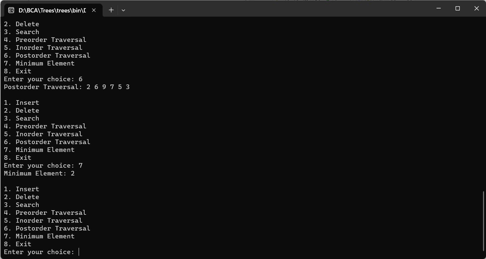

CREATE BINARY SEARCH TREE USING ARRAYS (INSERT, DELETE, SEARCH, PREORDER, INORDER, POSTORDER, MINIMUM ELEMENT)
#include
#include
// Define the structure of the node in the Binary Search Tree
struct Node {
int data;
struct Node* left;
struct Node* right;
};
// Function to create a new node with the given data
struct Node* createNode(int value) {
struct Node* newNode = (struct Node*)malloc(sizeof(struct Node));
newNode->data = value;
newNode->left = newNode->right = NULL;
return newNode;
}
// Function to insert a new node with the given value into the Binary Search Tree
struct Node* insertNode(struct Node* root, int value) {
if (root == NULL) {
return createNode(value);
}
if (value < root->data) {
root->left = insertNode(root->left, value);
} else if (value > root->data) {
root->right = insertNode(root->right, value);
}
return root;
}
// Function to search for a value in the Binary Search Tree
struct Node* searchNode(struct Node* root, int value) {
if (root == NULL || root->data == value) {
return root;
}
if (value < root->data) {
return searchNode(root->left, value);
}
return searchNode(root->right, value);
}
// Function to find the node with the minimum value in the Binary Search Tree
struct Node* minValueNode(struct Node* node) {
struct Node* current = node;
while (current && current->left != NULL) {
current = current->left;
}
return current;
}
// Function to delete a node with the given value from the Binary Search Tree
struct Node* deleteNode(struct Node* root, int value) {
if (root == NULL) {
return root;
}
if (value < root->data) {
root->left = deleteNode(root->left, value);
} else if (value > root->data) {
root->right = deleteNode(root->right, value);
} else {
if (root->left == NULL) {
struct Node* temp = root->right;
free(root);
return temp;
} else if (root->right == NULL) {
struct Node* temp = root->left;
free(root);
return temp;
}
struct Node* temp = minValueNode(root->right);
root->data = temp->data;
root->right = deleteNode(root->right, temp->data);
}
return root;
}
// Function to perform a preorder traversal of the Binary Search Tree
void preorderTraversal(struct Node* root) {
if (root != NULL) {
printf("%d ", root->data);
preorderTraversal(root->left);
preorderTraversal(root->right);
}
}
// Function to perform an inorder traversal of the Binary Search Tree
void inorderTraversal(struct Node* root) {
if (root != NULL) {
inorderTraversal(root->left);
printf("%d ", root->data);
inorderTraversal(root->right);
}
}
// Function to perform a postorder traversal of the Binary Search Tree
void postorderTraversal(struct Node* root) {
if (root != NULL) {
postorderTraversal(root->left);
postorderTraversal(root->right);
printf("%d ", root->data);
}
}
// Main function
int main() {
struct Node* root = NULL;
int choice, value;
do {
printf("\n1. Insert\n2. Delete\n3. Search\n4. Preorder Traversal\n5. Inorder Traversal\n6. Postorder Traversal\n7. Minimum Element\n8. Exit\n");
printf("Enter your choice: ");
scanf("%d", &choice);
switch (choice) {
case 1:
printf("Enter value to insert: ");
scanf("%d", &value);
root = insertNode(root, value);
break;
case 2:
printf("Enter value to delete: ");
scanf("%d", &value);
root = deleteNode(root, value);
break;
case 3:
printf("Enter value to search: ");
scanf("%d", &value);
if (searchNode(root, value) != NULL) {
printf("Value found!\n");
} else {
printf("Value not found!\n");
}
break;
case 4:
printf("Preorder Traversal: ");
preorderTraversal(root);
printf("\n");
break;
case 5:
printf("Inorder Traversal: ");
inorderTraversal(root);
printf("\n");
break;
case 6:
printf("Postorder Traversal: ");
postorderTraversal(root);
printf("\n");
break;
case 7:
if (root == NULL) {
printf("The tree is empty!\n");
} else {
struct Node* minNode = minValueNode(root);
printf("Minimum Element: %d\n", minNode->data);
}
break;
case 8:
printf("Exiting program.\n");
break;
default:
printf("Invalid choice!\n");
}
} while (choice != 8);
return 0;
}
